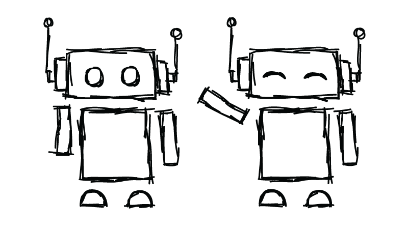

Botscrape Branding

So the vision from the client for this logo was to have a mascot that was inviting, given that the project itself wwould be very code intensive and well "not friendly". So I spent 5 minutes and drew what ever came to my mind. I ended up with this playful creature.